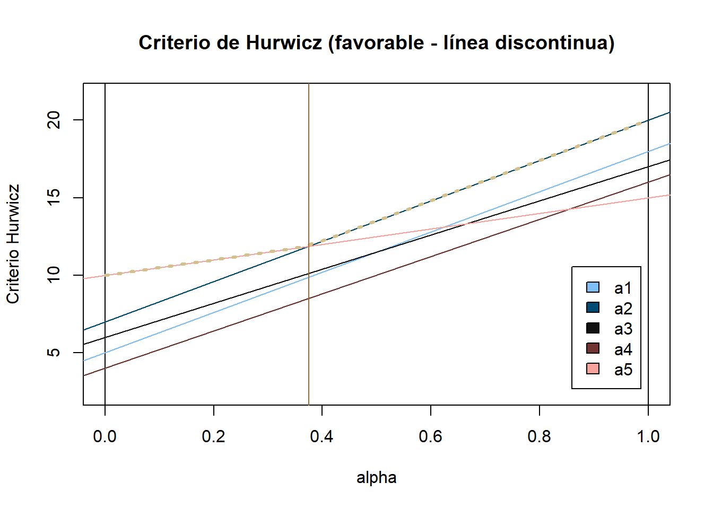
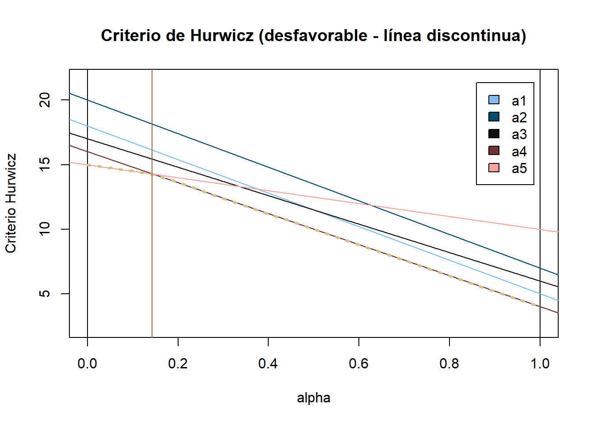

# Cargar librerías necesarias
library(tinytable)
# Cargar script con funciones
source("teoriadecision_funciones_incertidumbre.R")
# Preparar tema propio para tablas
colores <- hcl.colors(5, palette = "Berlin")
crea_vector_posiciones_tabla <- function(numero_columnas) {
posiciones <- ""
for(i in 1:numero_columnas) {
posiciones <- paste0(posiciones,"c")
}
return(posiciones)
}
crea_tabla_estilo <- function(tabla, nombresfila = TRUE) {
if (nombresfila == TRUE) {
rn <- rownames(tabla)
if (is.null(rn)) rn <- rep("", nrow(tabla))
tabla <- cbind(rn = rn, tabla, stringsAsFactors = FALSE)
colnames(tabla)[1] <- ""
rownames(tabla) <- NULL
}
t <- tt(tabla, theme = "empty", width=1) |>
format_tt(quarto=TRUE) |>
style_tt(j = 1:ncol(tabla), align = crea_vector_posiciones_tabla(ncol(tabla)), alignv = "m") |>
style_tt(i = 0, line = "b", line_color = colores[2], line_width = 0.2,
background = colores[5], color = colores[3]) |>
style_tt(i = 0, line = "t", line_color = colores[1], line_width = 0.1) |>
style_tt(i = 1:nrow(tabla), line = "b", line_color = colores[1], line_width = 0.1) |> style_tt(j = 1:(ncol(tabla)-1), line = "r", line_color = colores[1], line_width = 0.1)
return(t)
}Soluciones de los problemas
1 Problema 1
Se deben implementar todos los métodos de decisión bajo incertidumbre, tanto para el caso favorable como para el caso desfavorable (pesimista, optimista, Hurwicz, Savage, Laplace y punto ideal) para la siguiente tabla de decisión:
matriz_datos <- matrix(c(5, 15, 8, 18,
7, 13, 14, 20,
6, 17, 11, 17,
4, 14, 16, 16,
10, 10, 13, 15),
nrow = 5,
byrow = TRUE)
tabla_datos <- as.data.frame(matriz_datos)
colnames(tabla_datos) <- c("ω1", "ω2", "ω3", "ω4")
rownames(tabla_datos) <- c("a1", "a2", "a3", "a4", "a5")
crea_tabla_estilo(tabla_datos, TRUE)| ω1 | ω2 | ω3 | ω4 | |
|---|---|---|---|---|
| a1 | 5 | 15 | 8 | 18 |
| a2 | 7 | 13 | 14 | 20 |
| a3 | 6 | 17 | 11 | 17 |
| a4 | 4 | 14 | 16 | 16 |
| a5 | 10 | 10 | 13 | 15 |
# Definir la tabla de decisión
tabla_decision <- crea.tablaX(
c(5, 15, 8, 18,
7, 13, 14, 20,
6, 17, 11, 17,
4, 14, 16, 16,
10, 10, 13, 15),
numalternativas = 5, numestados = 4,
nb_alternativas = c("a1", "a2", "a3", "a4", "a5"),
nb_estados = c("ω1", "ω2", "ω3", "ω4"))1.1 Caso favorable
1.1.1 Método pesimista
alternativa_pesimista <- criterio.Wald(tabla_decision, favorable = TRUE)Para el criterio de Wald, en el caso favorable, la alternativa \(5\) es la mejor y el valor óptimo es \(10.\)
1.1.2 Método optimista
alternativa_optimista <- criterio.Optimista(tabla_decision, favorable = TRUE)Para el criterio Optimista, en el caso favorable, la alternativa \(2\) es la mejor y el valor óptimo es \(20\).
1.1.3 Método Hurwicz
alternativa_Hurwicz <- criterio.Hurwicz(tabla_decision, alfa = 0.5, favorable = TRUE)
alternativas_Hurwicz_alfas <- criterio.Hurwicz.General(tabla_decision, alfa = 10, favorable = TRUE)
tb_Hurwicz <- data.frame(matrix(c(
seq(from = 0, to = 1, by = (1/alternativas_Hurwicz_alfas$alfa)),
alternativas_Hurwicz_alfas$AlternativaOptima,
alternativas_Hurwicz_alfas$ValorOptimo),
nrow = length(alternativas_Hurwicz_alfas$AlternativaOptima),
byrow = FALSE,
))
colnames(tb_Hurwicz) <- c("Alfa", "Alternativa óptima", "Valor óptimo")Para el criterio de Hurwicz, en el caso favorable, la alternativa \(2\) es la mejor y el valor óptimo es \(13.5\). Con un valor de \(\alpha =\) \(0.5\).
Se muestra a continuación una tabla con las alternativas óptimas y los valores óptimos para diferentes valores de alfa, que van desde 0 hasta 1 con incrementos de 0.1:
| Alfa | Alternativa óptima | Valor óptimo |
|---|---|---|
| 0.0 | 5 | 10.0 |
| 0.1 | 5 | 10.5 |
| 0.2 | 5 | 11.0 |
| 0.3 | 5 | 11.5 |
| 0.4 | 2 | 12.2 |
| 0.5 | 2 | 13.5 |
| 0.6 | 2 | 14.8 |
| 0.7 | 2 | 16.1 |
| 0.8 | 2 | 17.4 |
| 0.9 | 2 | 18.7 |
| 1.0 | 2 | 20.0 |
Y gráficamente:
gráfico_Hurwicz <- dibuja.criterio.Hurwicz(tabla_decision, favorable = TRUE)
Además, se muestra un gráfico donde se pueden apreciar los intervalos de las alternativas óptimas para diferentes valores de alfa:
intervalos_Hurwicz <- dibuja.criterio.Hurwicz_Intervalos(tabla_decision, favorable = TRUE)
1.1.4 Método Savage
alternativa_Savage <- criterio.Savage(tabla_decision, favorable = TRUE)Para el criterio de Savage, en el caso favorable, la alternativa \(2\) es la mejor y el valor óptimo es \(4\).
1.1.5 Método Laplace
alternativa_Laplace <- criterio.Laplace(tabla_decision, favorable = TRUE)Para el criterio de Laplace, en el caso favorable, la alternativa \(2\) es la mejor y el valor óptimo es \(13.5\).
1.1.6 Método punto ideal
alternativa_puntoideal <- criterio.PuntoIdeal(tabla_decision, favorable = TRUE)Para el criterio de Punto Ideal, en el caso favorable, la alternativa \(2\) es la mejor y el valor óptimo es \(5.39\).
1.1.7 Resumen caso favorable
matriz_resumen_favorable <- matrix(c(
alternativa_pesimista$criterio,
alternativa_optimista$criterio,
alternativa_Hurwicz$criterio,
alternativa_Savage$criterio,
alternativa_Laplace$criterio,
alternativa_puntoideal$criterio,alternativa_pesimista$AlternativaOpt,
alternativa_optimista$AlternativaOpt,
alternativa_Hurwicz$AlternativaOpt,
alternativa_Savage$AlternativaOpt,
alternativa_Laplace$AlternativaOpt,
alternativa_puntoideal$AlternativaOpt),
nrow = 6, byrow = FALSE)
resumen_favorable <- as.data.frame(matriz_resumen_favorable)
colnames(resumen_favorable) <- c("Criterio", "Alternativa óptima")
crea_tabla_estilo(resumen_favorable, FALSE)| Criterio | Alternativa óptima |
|---|---|
| Wald | 5 |
| Optimista | 2 |
| Hurwicz | 2 |
| Savage | 2 |
| Laplace | 2 |
| Punto Ideal | 2 |
Vemos que las alternativas óptimas son diferentes según el criterio utilizado, siendo la alternativa \(a_2\) la que más veces aparece como óptima (5 veces). Ya alternativa \(a_5\) aparece una sola vez como óptima para el criterio pesimista y es la mejor alternativa también para el criterio de Hurwicz con valores de \(\alpha\) menores que \(0.375\) .
Decisión final
En este caso se va a optar por la alternativa \(a_2\) dado que es la que mayor número de veces aparece como óptima. En todos los criterios excepto en el persimista.
1.2 Caso desfavorable
1.2.1 Método pesimista
alternativa_pesimista_desfavorable <- criterio.Wald(tabla_decision, favorable = FALSE)Para el criterio de Wald, en el caso desfavorable, la alternativa \(5\) es la mejor y el valor óptimo es \(15\).
1.2.2 Método optimista
alternativa_optimista_desfavorable <- criterio.Optimista(tabla_decision, favorable = FALSE)Para el criterio Optimista, en el caso desfavorable, la alternativa \(4\) es la mejor y el valor óptimo es \(4\).
1.2.3 Método Hurwicz
alternativa_Hurwicz_desfavorable <- criterio.Hurwicz(tabla_decision, alfa = 0.5, favorable = FALSE)
alternativas_Hurwicz_alfas_desfavorable <- criterio.Hurwicz.General(tabla_decision, alfa = 10, favorable = FALSE)
tb_Hurwicz_desfavorable <- data.frame(matrix(c(
seq(from = 0, to = 1, by = (1/alternativas_Hurwicz_alfas_desfavorable$alfa)),
alternativas_Hurwicz_alfas_desfavorable$AlternativaOptima,
alternativas_Hurwicz_alfas_desfavorable$ValorOptimo),
nrow = length(alternativas_Hurwicz_alfas_desfavorable$AlternativaOptima),
byrow = FALSE,
))
colnames(tb_Hurwicz_desfavorable) <- c("Alfa", "Alternativa óptima", "Valor óptimo")Para el criterio de Hurwicz, en el caso desfavorable, la alternativa \(4\) es la mejor y el valor óptimo es \(10\). Con un valor de \(\alpha =\) \(0.5\).
Se muestra a continuación una tabla con las alternativas óptimas y los valores óptimos para diferentes valores de alfa, que van desde 0 hasta 1 con incrementos de 0.1:
| Alfa | Alternativa óptima | Valor óptimo |
|---|---|---|
| 0.0 | 5 | 15.0 |
| 0.1 | 5 | 14.5 |
| 0.2 | 4 | 13.6 |
| 0.3 | 4 | 12.4 |
| 0.4 | 4 | 11.2 |
| 0.5 | 4 | 10.0 |
| 0.6 | 4 | 8.8 |
| 0.7 | 4 | 7.6 |
| 0.8 | 4 | 6.4 |
| 0.9 | 4 | 5.2 |
| 1.0 | 4 | 4.0 |
Y gráficamente:
gráfico_Hurwicz_desfavorable <- dibuja.criterio.Hurwicz(tabla_decision, favorable = FALSE)
Además, se muestra un gráfico donde se pueden apreciar los intervalos de las alternativas óptimas para diferentes valores de alfa:
intervalos_Hurwicz_desfavorable <- dibuja.criterio.Hurwicz_Intervalos(tabla_decision, favorable = FALSE)
1.2.4 Método Savage
alternativa_Savage_desfavorable <- criterio.Savage(tabla_decision, favorable = FALSE)Para el criterio de Savage, en el caso desfavorable, la alternativa \(1\) es la mejor y el valor óptimo es \(5\).
1.2.5 Método Laplace
alternativa_Laplace_desfavorable <- criterio.Laplace(tabla_decision, favorable = FALSE)Para el criterio de Laplace, en el caso desfavorable, la alternativa \(1\) es la mejor y el valor óptimo es \(11.5\).
1.2.6 Método punto ideal
alternativa_puntoideal_desfavorable <- criterio.PuntoIdeal(tabla_decision, favorable = FALSE)Para el criterio de Punto Ideal, en el caso desfavorable, la alternativa \(1\) es la mejor y el valor óptimo es \(5.92\).
1.2.7 Resumen caso desfavorable
matriz_resumen_desfavorable <- matrix(c(
alternativa_pesimista_desfavorable$criterio,
alternativa_optimista_desfavorable$criterio,
alternativa_Hurwicz_desfavorable$criterio,
alternativa_Savage_desfavorable$criterio,
alternativa_Laplace_desfavorable$criterio,
alternativa_puntoideal_desfavorable$criterio,
alternativa_pesimista_desfavorable$AlternativaOpt,
alternativa_optimista_desfavorable$AlternativaOpt,
alternativa_Hurwicz_desfavorable$AlternativaOpt,
alternativa_Savage_desfavorable$AlternativaOpt,
alternativa_Laplace_desfavorable$AlternativaOpt,
alternativa_puntoideal_desfavorable$AlternativaOpt),
nrow = 6, byrow = FALSE)
resumen_desfavorable <- as.data.frame(matriz_resumen_desfavorable)
colnames(resumen_desfavorable) <- c("Criterio", "Alternativa óptima")
crea_tabla_estilo(resumen_desfavorable, FALSE)| Criterio | Alternativa óptima |
|---|---|
| Wald | 5 |
| Optimista | 4 |
| Hurwicz | 4 |
| Savage | 1 |
| Laplace | 1 |
| Punto Ideal | 1 |
Vemos que las alternativas óptimas son diferentes según el criterio utilizado, siendo la alternativa \(a_1\) la que más veces aparece como óptima (3 veces). La alternativa \(a_4\) aparece en dos ocasiones como óptima, por último para el criterio pesimista la mejor alternativa es \(a_5\) y es la mejor alternativa también para el criterio de Hurwicz con valores de \(\alpha\) menores que 0.143 .
Decisión final
En este caso se va a optar por la alternativa \(a_1\) dado que es la que mayor número de veces aparece como óptima y en el criterio de Hurwicz el gráfico nos muestra que es bastante equilibrada para todos los valores de alfa, aunque nunca sea la mejor.
2 Problema 2
Una persona recibe una herencia de 200.000 euros y se le presentan diferentes opciones de inversión para los próximos 10 años.
Puede terminar de pagar su hipoteca actual, ahorrando 40.000 euros de intereses y le sobrarían 30.000 euros que pondría en una cuenta remunerada al 2% anual
Puede seguir pagando su hipoteca y elegir una de las siguientes opciones
- Adquirir un piso por esa cantidad y si los alquileres turísticos siguen siendo posibles podrá generar un 6% anual. Si por el contrario se regularan pasaría a perder un 1% anual.
- Invertir en un fondo indexado que le puede generar un 7% anual pero si la bolsa baja perderá un 8%.
- Invertir en una franquicia de una cadena de comida rápida. Si acierta con el sitio podrá generar un 10% anual pero si se equivoca al seleccionar el sitio incurrirá en unas pérdidas anuales del 10%
2.1 Planteamiento del problema
Alternativas
- a1: Pagar hipoteca
- a2: Adquirir piso
- a3: Invertir en un fondo
- a4: Invertir en una franquicia
Estados de la naturaleza
- e1: Regulación alquileres
- e2: No regulación alquileres
- e3: Bolsa sube
- e4: Bolsa baja
- e5: Acierta con la ubicación
- e6: Se equivoca con la ubicación
Ahora vamos a construir la matriz de decisión para un año. Puesto que los estados de la naturaleza afectan por parejas (e1-e2, e3-e4, e5-e6) a las alternativas (a2, a3, a4). Se van a reducir a que la inversión de cada alternativa salga bien o mal ese año.
- e1_red: Inversión exitosa
- e2_red: Inversión fallida
Puesto que la alternativa 1 no se ve afectada por los estados de la naturaleza esta alternativa tendrá valores fijos en todos ellos y no se ve alterada por esta reducción.
Vamos a hacer una tabla para un año y luego aplicaremos los criterios de decisión bajo incertidumbre para ver qué alternativa es la mejor.
m11 <- 4000 + 30000 * 0.02
m12 <- 4000 + 30000 * 0.02
m21 <- 200000 * 0.06 - 4000
m22 <- -200000 * 0.01 - 4000
m31 <- 200000 * 0.07 - 4000
m32 <- -200000 * 0.08 - 4000
m41 <- 200000 * 0.1 - 4000
m42 <- -200000 * 0.1 - 4000
matriz_datos_2 <- matrix(c(m11, m12,
m21, m22,
m31, m32,
m41, m42),
nrow = 4,
byrow = TRUE)
tabla_datos_2 <- as.data.frame(matriz_datos_2)
colnames(tabla_datos_2) <- c("Inversión exitosa", "Inversión fallida")
rownames(tabla_datos_2) <- c("Pagar hipoteca",
"Aquirir piso",
"Invertir fondo",
"Invertir franquicia")
crea_tabla_estilo(tabla_datos_2, TRUE)| Inversión exitosa | Inversión fallida | |
|---|---|---|
| Pagar hipoteca | 4600 | 4600 |
| Aquirir piso | 8000 | -6000 |
| Invertir fondo | 10000 | -20000 |
| Invertir franquicia | 16000 | -24000 |
# Definir la tabla de decisión
tabla_decision2 <- crea.tablaX(c(m11, m12,
m21, m22,
m31, m32,
m41, m42),
numalternativas = 4,
numestados = 2,
nb_alternativas = c("Pagar hipoteca",
"Aquirir piso",
"Invertir fondo",
"Invertir franquicia"),
nb_estados = c("Inversión exitosa",
"Inversión fallida"))2.2 Resolución del problema
En la siguiente tabla se muestran los resultados de aplicar todos los criterios de decisión bajo incertidumbre para el caso favorable.
resultado2 <- criterio.Todos(tabla_decision2, alfa = 0.5, favorable = TRUE)
res <- as.data.frame(resultado2)
crea_tabla_estilo(res, nombresfila = TRUE)| Inversión exitosa | Inversión fallida | Wald | Optimista | Hurwicz | Savage | Laplace | Punto Ideal | Veces Optima | |
|---|---|---|---|---|---|---|---|---|---|
| Pagar hipoteca | 4600 | 4600 | 4600 | 4600 | 4600 | 11400 | 4600 | 11400 | 4 |
| Aquirir piso | 8000 | -6000 | -6000 | 8000 | 1000 | 10600 | 1000 | 13280 | 1 |
| Invertir fondo | 10000 | -20000 | -20000 | 10000 | -5000 | 24600 | -5000 | 25321 | 0 |
| Invertir franquicia | 16000 | -24000 | -24000 | 16000 | -4000 | 28600 | -4000 | 28600 | 1 |
| iAlt.Opt (fav.) | – | – | Pagar hipoteca | Invertir franquicia | Pagar hipoteca | Aquirir piso | Pagar hipoteca | Pagar hipoteca | Pagar hipoteca |
Observamos que para 4 de los 6 criterios la alternativa óptima es “Pagar hipoteca”, siendo las otras dos alternativas óptimas “Invertir en una franquicia” para el criterio optimista y “Adquirir un piso” para el criterio de Hurwicz.
Decisión final
Se va a optar por la alternativa “Pagar hipoteca” ya que es la que más veces aparece como óptima y además es la opción más segura, ya que las demás alternativas conllevan un riesgo mayor de pérdida económica.